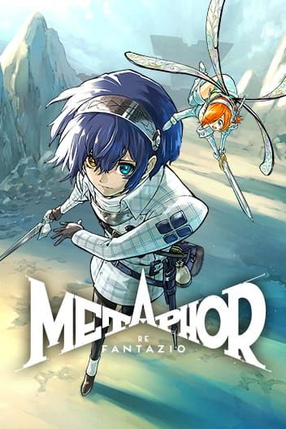

Membaca Manga

Manga Metaphor: Re Fantazio hadir sebagai adaptasi visual dari RPG fantasi terbaru besutan Atlus, yang dikenal lewat dunia penuh simbolisme dan filosofi sosial. Versi manga ini menekankan pembangunan dunia (worldbuilding) yang kaya, menampilkan kerajaan-kerajaan misterius, makhluk mitologis, serta sistem kekuatan bernama Archetypes yang menjadi inti konflik cerita. Gaya ilustrasinya mempertahankan aura gelap-fantasi namun tetap mudah diikuti, membuat pembaca baru maupun penggemar gim dapat masuk dengan cepat ke alurnya.
Cerita mengikuti seorang pemuda bernama Will yang dipaksa terjun ke dunia penuh intrik politik dan ancaman supernatural untuk memecahkan kutukan Sang Pangeran setelah sebuah insiden mengguncang kerajaannya. Dalam manga, perjalanan Will diperlihatkan dengan tempo lebih konsisten, memperjelas motivasi tokoh dan konflik batinnya. Setiap bab menghadirkan perkembangan karakter yang kuat—baik dari sisi psikologis maupun hubungannya dengan para sekutu yang ia temui sepanjang perjalanannya.
Selain aspek cerita, manga ini menonjol karena cara penyampaian temanya: identitas, ambisi, keberanian menghadapi ketidakadilan, dan pergulatan antara kenyataan serta metafora yang membentuk dunia. Visual simbolik yang sering muncul membuat pembaca dapat menafsirkan makna di balik tiap adegan tanpa mengorbankan alur utama. Secara keseluruhan, manga Metaphor: Re Fantazio menjadi pendamping ideal bagi gimnya—memperdalam pemahaman dunia serta memberi pengalaman naratif yang lebih emosional dan sinematis.
Favorite Panel :

Kembali ke Artikel
|
.png)
.png)